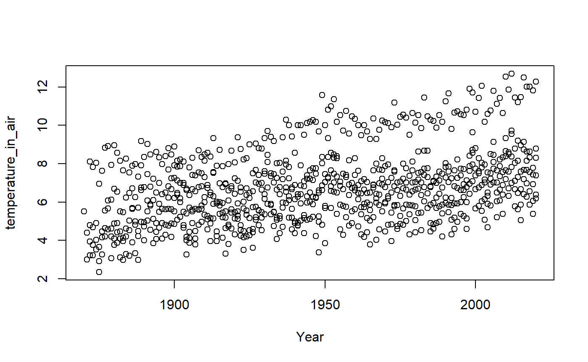
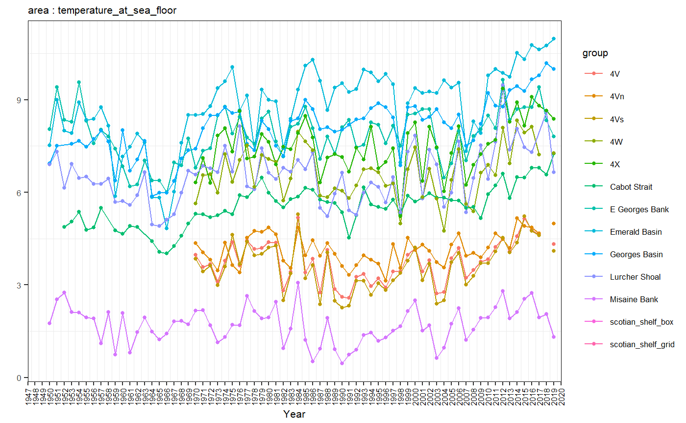
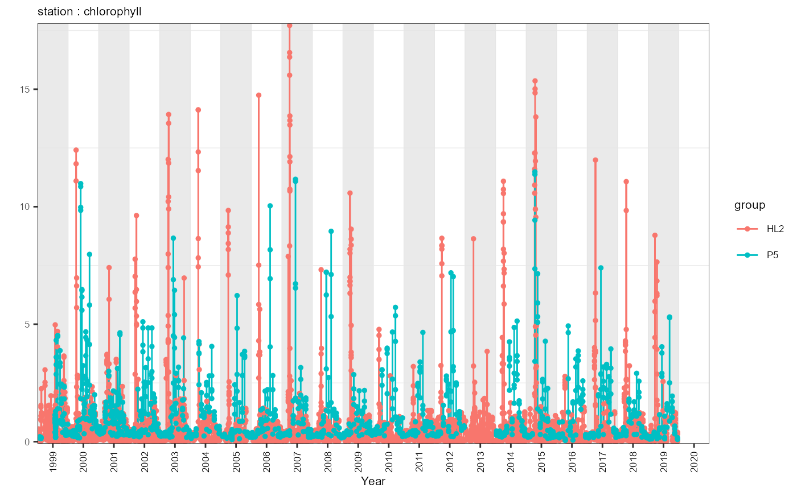

Plotting in azmpdata
E. Chisholm
12/4/2020
Source:vignettes/plotting_azmpdata.Rmd
plotting_azmpdata.Rmdlibrary(azmpdata)
##
## casaultb/azmpdata status:
## (Package ver: 0.2019.0.9000) Up to date
## (Data ver: 2021-01-05 ) Push to GithubIntroduction
The purpose of this vignette is to demonstrate how to plot data which is pulled from the azmpdata package. We show brief examples of various plotting methods including base plot, and ggplot2. We also review how to recreate default plots from the gslea package which has similar functionality to azmpdata but contains Gulf and Quebec region data products.
The Data
We will use sample data from the azmpdata package for each example. Data can be called using
## station year integrated_chlorophyll_0_100 integrated_nitrate_0_50
## 1 HL2 1999 68.03585 84.99264
## 2 HL2 2000 52.18247 153.67378
## 3 HL2 2001 68.30404 149.70984
## 4 HL2 2002 47.39108 103.19296
## 5 HL2 2003 96.47844 150.75062
## 6 HL2 2004 66.82304 126.26645
## integrated_nitrate_50_150 integrated_phosphate_0_50
## 1 914.0106 25.45192
## 2 1052.2351 30.76459
## 3 852.2082 37.95599
## 4 987.0082 31.49406
## 5 1043.7585 29.26172
## 6 857.7356 27.56220
## integrated_phosphate_50_150 integrated_silicate_0_50
## 1 95.31417 133.3231
## 2 106.72310 188.3993
## 3 115.86794 165.8927
## 4 112.73353 112.2547
## 5 105.77807 178.0901
## 6 99.64667 159.1486
## integrated_silicate_50_150 temperature_in_air
## 1 1027.9353 NA
## 2 1027.6653 NA
## 3 847.4100 NA
## 4 906.0111 NA
## 5 972.4782 NA
## 6 831.4975 NA
## sea_surface_temperature_from_moorings
## 1 NA
## 2 NA
## 3 NA
## 4 NA
## 5 NA
## 6 NABase plot
Using base R to create plots can often be the simplest way for a novice to explore a dataset.
If we wanted to create a simple plot of a variable over time, it might look like this
plot(df$year, df$temperature_in_air, xlab = 'Year', ylab = 'temperature_in_air')

Obviously there are many more advanced plots that can be made using base plot but we leave these up to the individual users to explore.
ggplot2
Using ggplot2 can give great simple exploratory plots, using a different ‘grammar’.
If a user wanted to compare different variables over time, ggplot2 has functions which make this very simple.
library(ggplot2) p <- ggplot(data = df) + geom_line(aes(x = year, y = temperature_in_air, colour = 'air_temperature'), show.legend = TRUE) + geom_point(aes(x = year, y = sea_surface_temperature_from_moorings, colour = 'sea_surface_temperature_from_moorings'), show.legend = TRUE)+ labs(y = 'degrees C' ) + scale_color_manual(name = "variables", breaks = c('air_temperature', 'sea_surface_temperature_from_moorings'), values = c('air_temperature' = 'red', 'sea_surface_temperature_from_moorings' = 'blue')) print(p)
## Warning: Removed 813 rows containing missing values (geom_point).
The next two examples contain generic code that could be modified to plot any dataframe (of the same time scale).
Another common plotting task would be to plot the annual means of a given dataframe. This method is fairly generic and could be used for any annual dataset.
df_data <- get('Derived_Annual_Broadscale') # get data variable <- 'temperature_at_sea_floor' # select variable to plot # check for metadata and seperate metanames <- c('year', 'month', 'day', 'area', 'section', 'station' ) meta_df <- names(df_data)[names(df_data) %in% metanames] group <- meta_df[meta_df != 'year'] df_data <- df_data %>% dplyr::select(., all_of(meta_df), all_of(variable) ) %>% dplyr::rename(., 'value' = all_of(variable) ) %>% dplyr::rename(., 'group' = all_of(group)) # set x-axis x_limits <- c(min(df_data$year)-1, max(df_data$year)+1) x_breaks <- seq(x_limits[1], x_limits[2], by=1) x_labels <- x_breaks # set y-axis y_limits <- c(min(df_data$value, na.rm=T) - 0.1*mean(df_data$value, na.rm=T), max(df_data$value, na.rm=T) + 0.1*mean(df_data$value, na.rm=T)) # plot data p <- ggplot2::ggplot() + # plot data - line ggplot2::geom_line(data=df_data, mapping=ggplot2::aes(x=year, y=value, col = group), size=.5) + # plot data - dots ggplot2::geom_point(data=df_data, mapping=ggplot2::aes(x=year, y=value, col = group), size=1) + # set coordinates system and axes ggplot2::coord_cartesian() + ggplot2::scale_x_continuous(name="Year", limits=x_limits, breaks=x_breaks, labels=x_labels, expand=c(0,0)) + ggplot2::scale_y_continuous(name="", limits=y_limits, expand=c(0,0)) # customize theme p <- p + ggplot2::theme_bw() + ggplot2::ggtitle(paste(group, variable, sep=" : " )) + ggplot2::theme( text=ggplot2::element_text(size=8), axis.text.x=ggplot2::element_text(colour="black", angle=90, hjust=0.5, vjust=0.5), plot.title=ggplot2::element_text(colour="black", hjust=0, vjust=0, size=8), panel.grid.major=ggplot2::element_blank(), panel.border=ggplot2::element_rect(size=0.25, colour="black"), plot.margin=grid::unit(c(0.1,0.1,0.1,0.1), "cm")) print(p)
## Warning: Removed 168 row(s) containing missing values (geom_path).## Warning: Removed 172 rows containing missing values (geom_point).
A user may also want to plot a timeseries. This method is also fairly generic and could be modified to plot any Occupations dataset.
df_data <- get('Discrete_Occupations_Stations') # get data variable <- 'chlorophyll' # choose variable to plot # check for metadata metanames <- c('year', 'month', 'day', 'area', 'section', 'station' ) meta_df <- names(df_data)[names(df_data) %in% metanames] group <- meta_df[!meta_df %in% c('year', 'month', 'day')] df_data <- df_data %>% dplyr::select(., all_of(meta_df), all_of(variable) ) %>% dplyr::rename(., 'value' = all_of(variable) ) %>% dplyr::rename(., 'group' = all_of(group)) #TODO some dataframes do not have groups!? # prepare data df_data <- df_data %>% tidyr::unite(date, year, month, day, sep="-", remove=F) %>% dplyr::mutate(year_dec=lubridate::decimal_date(lubridate::ymd(date))) %>% dplyr::select(year, year_dec, value, group) # set x-axis x_limits <- c(min(df_data$year), max(df_data$year)+1) x_breaks <- seq(x_limits[1]+.5, x_limits[2]-.5, by=1) x_labels <- x_breaks-.5 # set y-axis y_limits <- c(min(df_data$value, na.rm=T) - 0.1*mean(df_data$value, na.rm=T), max(df_data$value, na.rm=T) + 0.1*mean(df_data$value, na.rm=T)) ## set shaded rectangles breaks df_rectangles <- tibble::tibble(xmin=seq(x_limits[1], x_limits[2], by=2), xmax=seq(x_limits[1], x_limits[2], by=2)+1, ymin=y_limits[1], ymax=y_limits[2]) # plot data p <- ggplot2::ggplot() + # plot shaded rectangles ggplot2::geom_rect(data=df_rectangles, mapping=ggplot2::aes(xmin=xmin, xmax=xmax, ymin=ymin, ymax=ymax), fill="gray90", alpha=0.8) + # plot data - line ggplot2::geom_line(data=df_data, mapping=ggplot2::aes(x=year_dec, y=value, col = group), size=.5) + # plot data - dots ggplot2::geom_point(data=df_data, mapping=ggplot2::aes(x=year_dec, y=value, col = group), size=1) + # set coordinates system and axes ggplot2::coord_cartesian() + ggplot2::scale_x_continuous(name="Year", limits=x_limits, breaks=x_breaks, labels=x_labels, expand=c(0,0)) + ggplot2::scale_y_continuous(name="", limits=y_limits, expand=c(0,0)) # customize theme p <- p + ggplot2::theme_bw() + ggplot2::ggtitle(paste(group, variable, sep=" : " )) + ggplot2::theme( text=ggplot2::element_text(size=8), axis.text.x=ggplot2::element_text(colour="black", angle=90, hjust=0.5, vjust=0.5), plot.title=ggplot2::element_text(colour="black", hjust=0, vjust=0, size=8), panel.grid.major=ggplot2::element_blank(), panel.border=ggplot2::element_rect(size=0.25, colour="black"), plot.margin=grid::unit(c(0.1,0.1,0.1,0.1), "cm")) print(p)
## Warning: Removed 1 rows containing missing values (geom_rect).## Warning: Removed 186 row(s) containing missing values (geom_path).## Warning: Removed 5945 rows containing missing values (geom_point).
gslea
gslea was a package developed to support ecosystem approach research in the Gulf Region. It contains a plotting function EA.plot.f() which can be replicated using azmpdata.
Note these plots may appear very small in the notebook format.
dat <- get('Derived_Annual_Stations') actual.EARs= unique(dat$station) # get regions to plot dat.only <- dat[,3:11] # isolate data variables to plot (not metadata) no.plots= length(dat.only)*length(actual.EARs) # calculate number of plots ot be displayed # set par info based on number of plots (max 25 per page) if(no.plots>25) {par(mfcol=c(5, 5),mar=c(1.3,2,3.2,1),omi=c(.1,.1,.1,.1), ask=T)} if(no.plots<=25){ par(mfcol=c(length(dat.only), length(actual.EARs)),mar=c(1.3,2,3.2,1),omi=c(.1,.1,.1,.1))} counter=1 for(i in actual.EARs){ # loop through regions ear.dat= dat[dat$station == i,] for(ii in 1:length(dat.only)){ # loop by variables var.dat= data.frame('value' = ear.dat[[names(dat.only)[[ii]]]], 'station' = ear.dat$station, 'year' = ear.dat$year) # get only one variable for one region if(!is.na(diff(range(var.dat$value)))){ # if all values are NA skip over plotting # plot if(nrow(var.dat)<1) plot(0, xlab="", ylab="", xaxt="n",yaxt="n",main=paste("Station",i,names(dat.only)[[ii]])) if(nrow(var.dat)>0) plot(var.dat$year, var.dat$value, xlab="", ylab="", main=paste("Station",i,names(dat.only)[[ii]])) } } counter= counter+1 } # set par info par(mfcol=c(1,1),omi=c(0,0,0,0),mar= c(5.1, 4.1, 4.1, 2.1), ask=F)